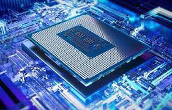
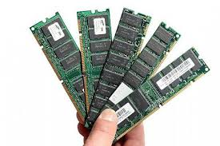
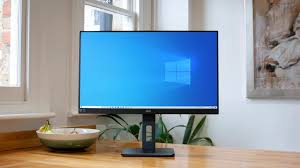
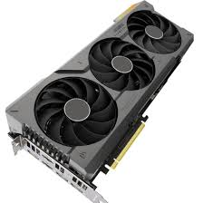
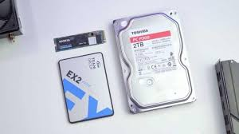
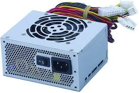
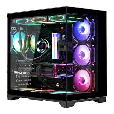
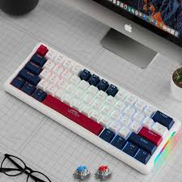
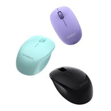

Selamat Datang di Ensiklopedia Hardware
Mempelajari komputer dari awal, dimanapun, kapanpun.
🧠 Apa Itu Hardware?
Hardware (Perangkat Keras) adalah semua komponen fisik yang membentuk sebuah sistem komputer dan dapat disentuh serta dilihat secara nyata. Hardware adalah fondasi yang memungkinkan perangkat lunak (software) dapat berjalan.
Katalog Hardware Inti
1. CPU (Central Processing Unit)

CPU adalah "otak" komputer, bertanggung jawab menjalankan semua instruksi dan pemrosesan data. Ini adalah komponen terpenting yang menentukan kecepatan sistem.
2. RAM (Random Access Memory)

RAM adalah memori jangka pendek yang menyimpan data yang sedang aktif agar dapat diakses CPU dengan cepat. Semakin besar RAM, semakin lancar multitasking.
3. Motherboard

Motherboard adalah papan sirkuit utama yang menghubungkan dan memungkinkan semua komponen hardware lainnya untuk berkomunikasi.
4. GPU (Graphics Processing Unit)

GPU dirancang untuk mempercepat rendering gambar dan video, sangat penting untuk bermain game dan desain grafis berat.
5. SSD/HDD (Penyimpanan)

SSD dan HDD adalah memori jangka panjang untuk menyimpan sistem operasi, aplikasi, dan file Anda.
6. PSU (Power Supply Unit)

PSU mengubah daya AC dari dinding menjadi daya DC bertegangan rendah yang dibutuhkan oleh semua komponen internal komputer.
7. Casing (Chassis)

Casing adalah kerangka eksternal yang melindungi dan menampung semua komponen internal komputer, sekaligus mengatur aliran udara.
8. Monitor (Display)
Monitor adalah perangkat output utama yang menampilkan informasi visual dari komputer kepada pengguna.
9. Keyboard

Keyboard adalah perangkat input utama untuk memasukkan teks, angka, dan perintah ke dalam komputer.
10. Mouse

Mouse adalah perangkat input untuk mengontrol kursor pada layar, memungkinkan interaksi cepat dengan antarmuka grafis.